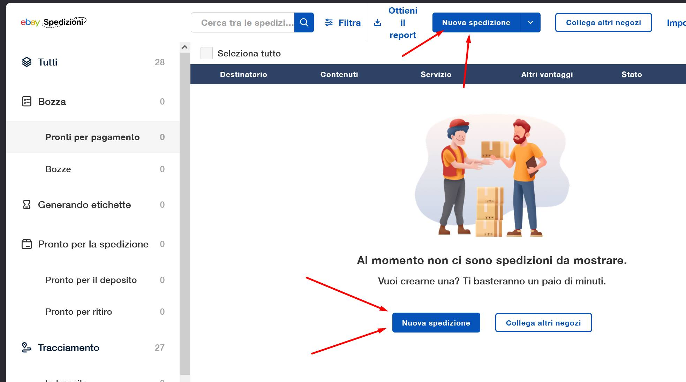
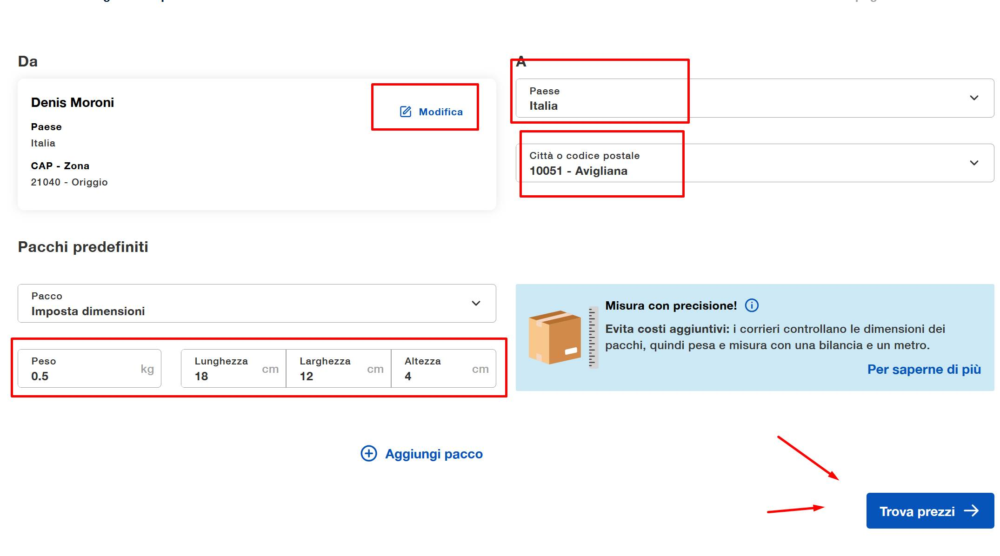
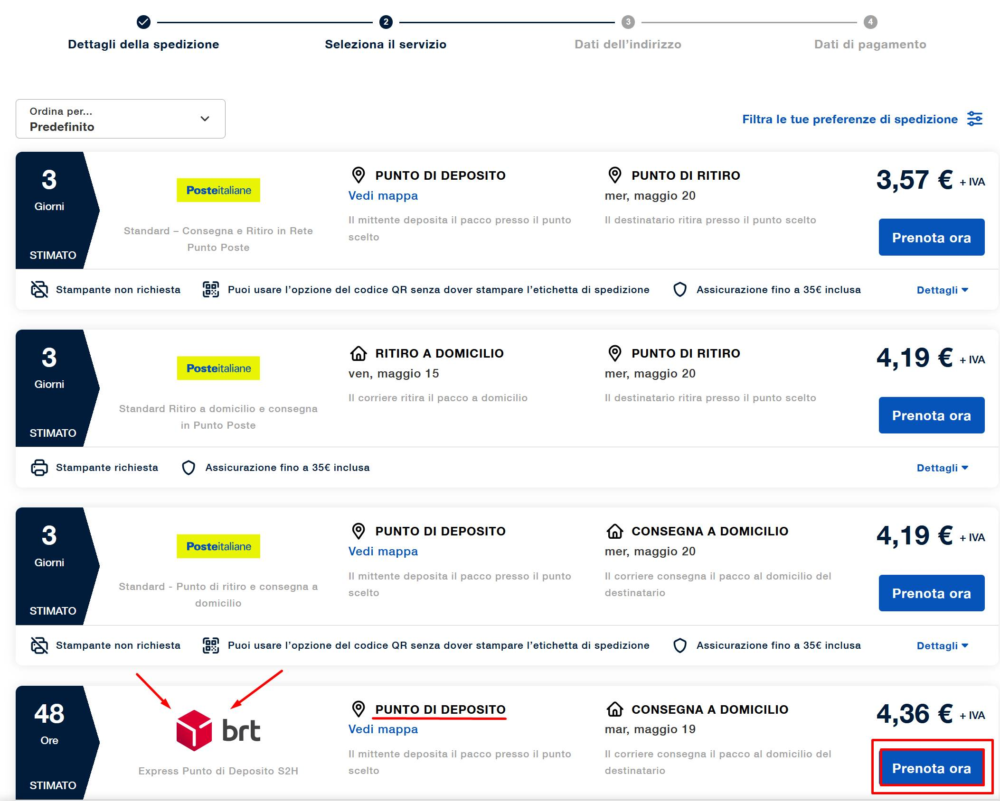
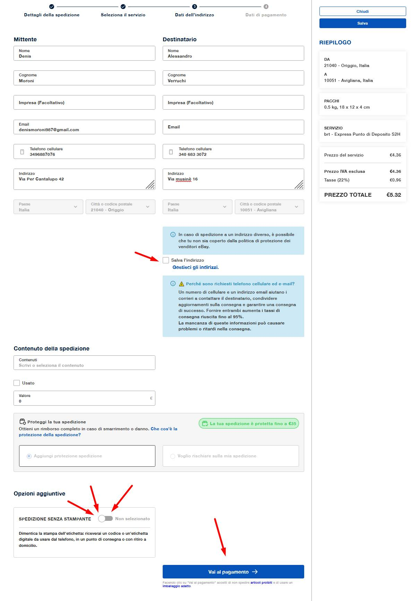
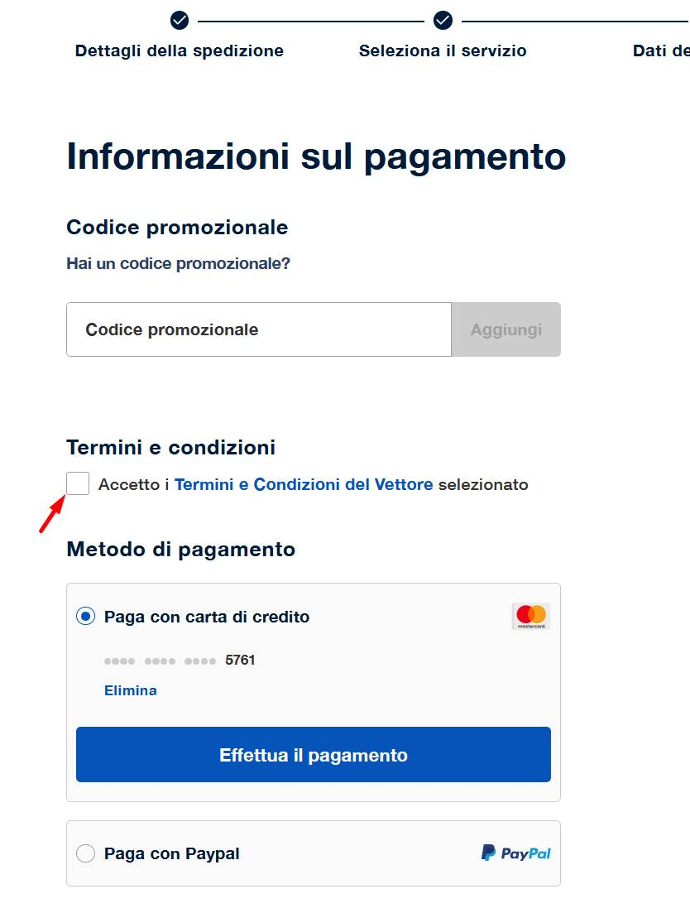
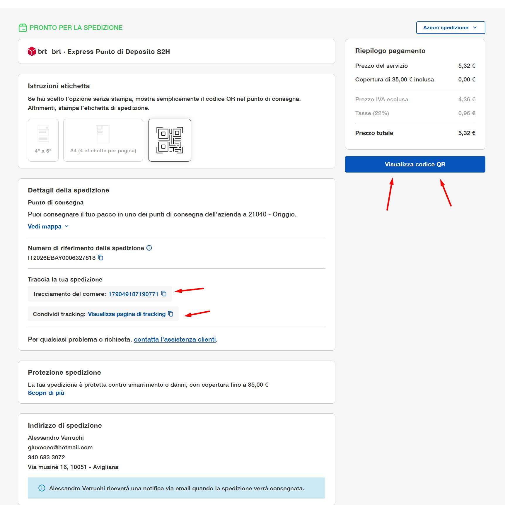

Vai su spedizioni.ebay.it per registrarti o effettuare l'accesso.
Vai su "nuova spedizione".

Inserire le informazioni sul mittente, sul pacco e sulla città del destinatario.

Decidere con chi spedire e se usare il punto di deposito o il ritiro a domicilio.

Salvare l'indirizzo, dichiarare eventualmente il contenuto per l'assicurazione e decidere di spedire senza stampante per delegare il lavoro al tuo cartolaio di fiducia.

Procedi al pagamento.

Scaricare la documentazione necessaria.
